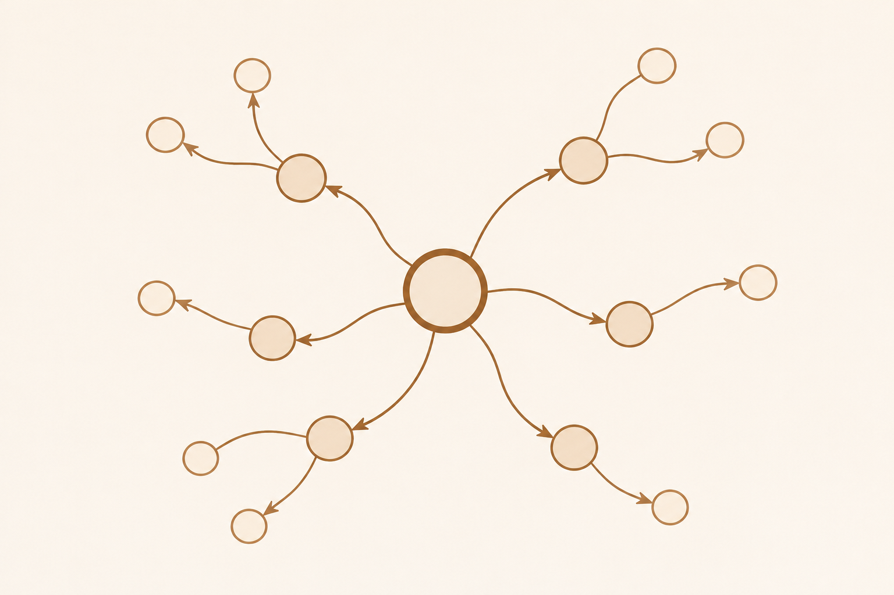

On Worldviews and Meaning
A Tuṣita on Earth
There have been some exceedingly rare seasons in my life. Perhaps, like all such seasons in anyone's life, once they have passed, they never disappear entirely. Every once in a while, certain thoughts I once contemplated stir from dormancy and return to me. I have no intention of dismissing them, and indeed have good reasons to respect them, enough that I feel compelled to set them straight in my mind once again. However complex they may be, and however busy I become, these reunions demand a considerable amount of my time and energy. I therefore wonder whether it might be a solution, once and for all, to seal them away within these pages, where they may quietly remain.
The Three Possibilities of World Views
View 1
A Grand Rule Set
The world is entirely governed by a grand set of rules, with no divinity behind it.
View 2
A Divine Observer
A creator brought the world and its rules into existence, for reasons unknown to us. Since then, the world has followed those rules, while its creator merely observes.
View 3
A Divine Manager
The world is largely governed by its rules, but a divine manager may still intervene in ways beyond our observation, perhaps by determining the random seeds of stochastic processes.
How limited science is when it comes to determining which of these three possibilities describes our existence! In the ordinary course of scientific inquiry, we propose hypotheses, design experiments to test them, and, through our findings, gradually deepen our understanding of the rules that govern the world. If we are sufficiently successful, we may eventually arrive at a set of scientific laws that approximates the true rules of the universe remarkably well. Yet when it comes to how those rules came to be in the first place, or whether some divine hand still intervenes beyond our observation, science has remarkably little to tell us.
Meaning as a Graph
While Occam's razor may favor the first view, as all three possess largely the same explanatory power, it is important to remember that people do not adopt worldviews merely to understand the physics of the universe. Worldviews can profoundly shape our systems of values. Let us take Christianity as an example, as I have encountered it often enough in my own life. I once entered a church where a group of people were preaching. They told me that humanity had once lived in communion with God, and that, had it not been for the sins of Adam and Eve, this would have remained our condition forever. For ages, humanity had suffered the consequences of those original sins, until Jesus Christ came to reconcile us with God. To live with God once more, they explained, we must follow His teachings and walk alongside Him.
Of course, I respect their beliefs and have no intention of passing judgment on the scientific rigor of their preaching. What interests me here is a recurring pattern in such teachings: they often begin with a divine existence, and meaning emerges from our relationship with it. In particular, if someone believes that certain beings are divine and that their existence is somehow connected to our own, then following them, spreading their teachings, or even challenging them may become profoundly meaningful. Furthermore, once we accept that certain interactions with the divine are meaningful, one implication leads to another, and an entire collection of things may acquire meaning through their logical connections to that divine origin.
Yet this derivation of meaning does not require the existence of deities. Earthly things and human ideals may equally be taken as meaningful in themselves, serving as the starting points of similar chains. Some may place the aspirations of a nation at the center of their values; others may find their deepest purpose in protecting their families, or in pursuing some other ideal. Many, perhaps, simply leave such questions unanswered, or have never thought to ask them at all.

I have been thoroughly poisoned by my mathematical education, and whenever I contemplate such matters, a simple mathematical framework inevitably presents itself to me, one that captures the recurring pattern in these systems in the form of a graph of meaning. Let us represent everything an individual considers meaningful as a collection of nodes, and the logical relationships through which meaning is derived as directed edges connecting them. We then obtain, quite naturally, a directed graph of meaningful things. Moreover, if we hold the rules of derivation fixed, the structure of this graph is determined by its root nodes, with every other node reached through rules.
From this perspective, we can arguably say that, when considering an individual's system of values, provided that the individual does not regard everything as meaningless, that their system is logically coherent, and that every meaningful item can be traced through a set of derivation rules that are interpretable in their reasoning to some fundamental premise, we need only examine the root nodes of this graph: those things the individual regards as self-evidently meaningful, without requiring any further justification, either divine or non-divine..
My Encounters with Buddhism
For some time, I have been asking myself what exactly might constitute the root nodes of meaning in my own life. I have some answers, and they are among the principal reasons I entered scientific research to understand intelligence. Naturally, I ought to develop these answers into a comprehensive system of thought by which to direct my life. Yet I find little pleasure in such an undertaking, and the time and effort it demands would inevitably interfere with my career. Adopting an existing system that accords with my own convictions and aspirations therefore seems the most natural course left to me.
Among all the systems I have encountered, Buddhism has always held a rather special place. I find much of its teachings agreeable to my own thoughts, and, more personally, I feel that I share a certain 缘 with it, a kind of affinity that calls for no elaborate justification.
Being something of a traveler, I have occasionally found myself visiting famous temples. On one such occasion, I made a wish, as tourists at temples often do. Moreover, I remember making a rather curious promise: "If such a wish can come true, I shall consider myself a believer." Strangely enough, I can no longer recall exactly what I wished for, but the promise has somehow remained consequential to me. It is in this sense that I now consider myself a student and practitioner of Buddhism.
Tuṣita as My North Star
From what I have read, Buddhist cosmology places us within the realm of desire. Among its six heavens, the fourth, Tuṣita (兜率天), has some very promising features. It is said to be the dwelling place of Maitreya (弥勒), the future Buddha. Above it lies the fifth heaven, Nirmāṇarati (化乐天), whose inhabitants enjoy pleasures of their own creation, and the sixth, Paranirmitavaśavartin (他化自在天), whose inhabitants enjoy pleasures created by others.
For some time, I found myself puzzled by a rather simple question: why does Maitreya, given his spiritual stature, remain in the fourth heaven rather than ascend to one of the higher heavens?
Consider our six senses: eye, ear, nose, tongue, body, and mind, through which we experience sights, sounds, smells, tastes, touches, and mental objects. If I have understood my readings correctly, the inhabitants of Tuṣita can enjoy the satisfaction of all six, yet remain limited by their own forms of existence. I may experience the pleasure of a delicious meal, but I cannot experience what a starving lion feels as it devours a sheep. I imagine the inhabitants of the higher heavens as enjoying greater freedom in this respect: those of the fifth might create such an experience for themselves, while those of the sixth might partake in experiences made available by others. In this sense, Tuṣita seems to offer less than the two heavens above it.
Yet perhaps this is precisely what makes Tuṣita so attractive to me. One need not become something else, nor assume another's place, to enjoy what one's own existence has to offer. The six senses remain intact, their desires sufficiently satisfied, and one remains oneself. More importantly, with those desires at rest, there is time and peace of mind to follow Maitreya and practice the Dharma, which, according to Desmond, is an appropriate term for 正法.
And it eventually occurred to me that one need not actually ascend to the fourth heaven to live in something resembling it. One might simply arrange one's life so that one's needs are sufficiently met, without becoming attached to any particular satisfaction, and devote the time and energy thus freed to the practice of whatever they find meaningful. To enjoy what life has to offer, to remain oneself, and to have enough peace of mind to practice some kind of "Dharma." This, I think, is how Tuṣita might be found within my reach, and how I would like to live accordingly.